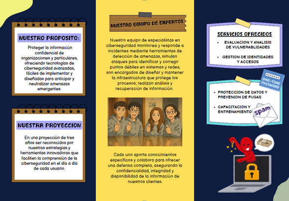
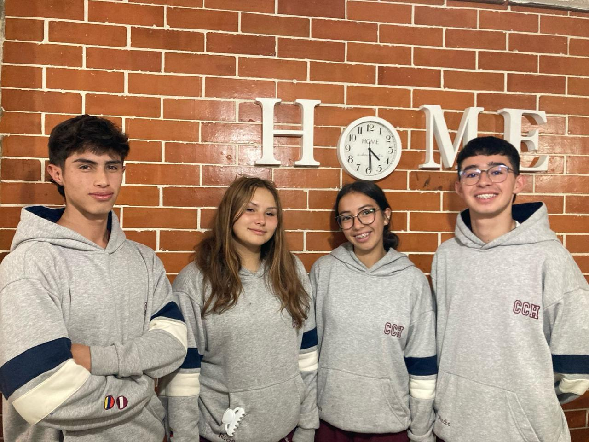
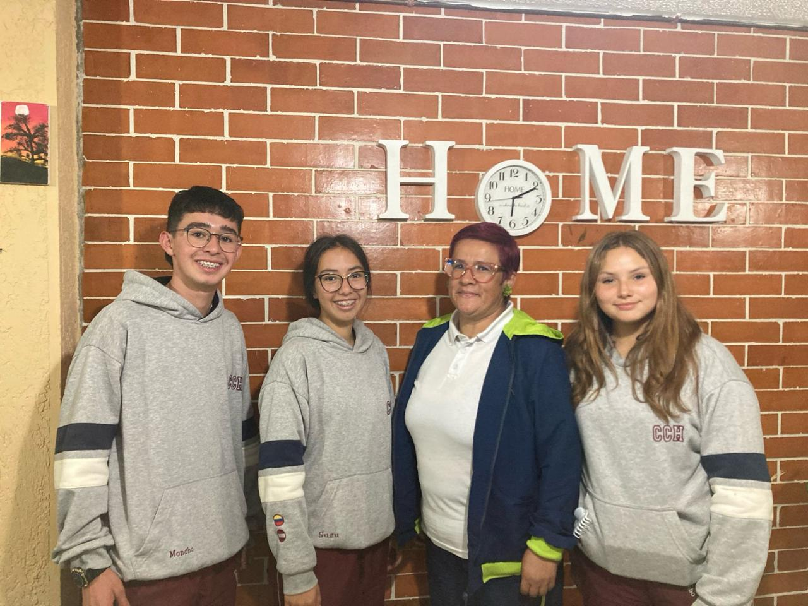
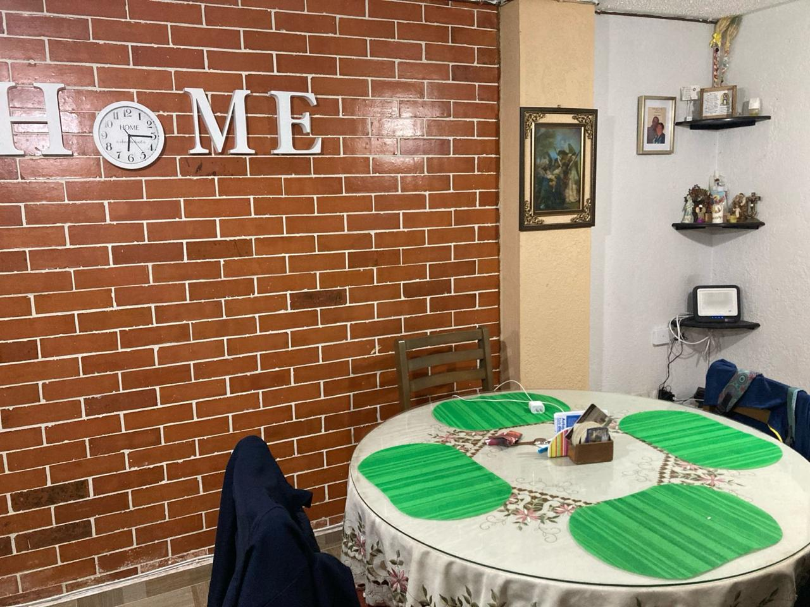
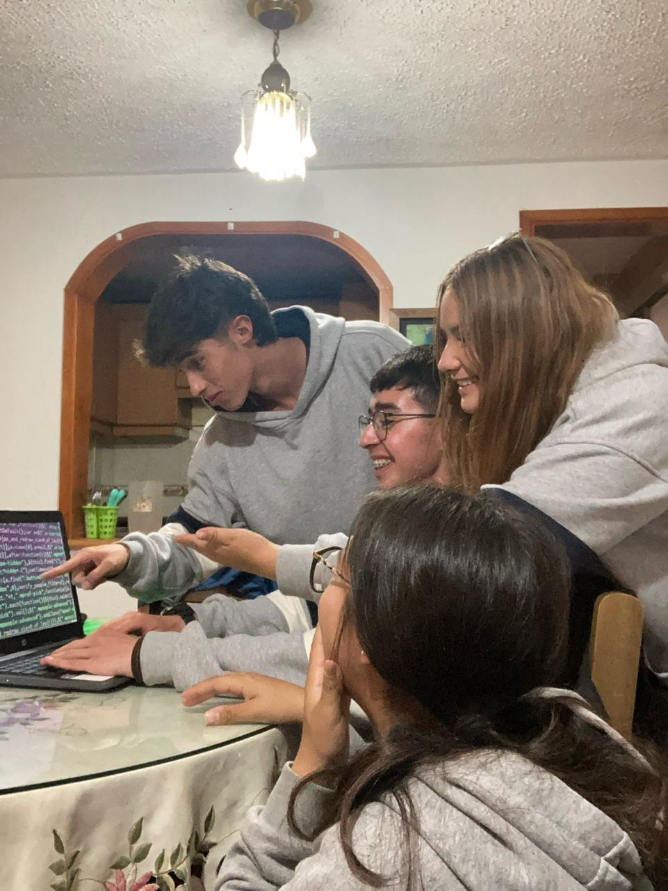
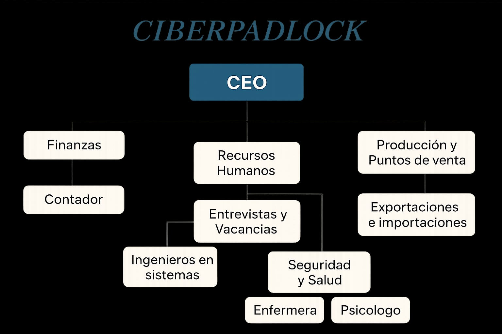

CiberPadlock es una empresa dedicada a brindar soluciones integrales de ciberseguridad. Ofrecemos servicios como revisión de sistemas, detección de fallas, pruebas preventivas contra ataques, asesorías en normas de seguridad digital y capacitación en buenas prácticas tecnológicas. Nuestro enfoque se basa en el uso de inteligencia artificial y automatización, herramientas que nos permiten detectar y responder a incidentes en tiempo real de manera eficiente y confiable.
¡Quienes Somos
En CiberPadlock trabajamos bajo tres pilares fundamentales:
Uso de tecnología actual para garantizar soluciones modernas y efectivas.
Cumplimiento de normas de seguridad que respalden la confianza de nuestros clientes.
Capacitación constante de nuestro equipo, lo que nos permite estar siempre preparados frente a los nuevos desafíos digitales.
Nuestro propósito es contribuir a un entorno digital más seguro, trabajando de la mano con instituciones educativas, empresas y entidades públicas para fortalecer la cultura de la ciberseguridad en la sociedad.

Cómo se Creó la Empresa
CiberPadlock nació como respuesta a una necesidad evidente en la comunidad: la falta de protección frente a las crecientes amenazas digitales. Con el avance acelerado de la tecnología, cada vez más personas y empresas empezaron a manejar información sensible —desde datos personales hasta documentos financieros— sin contar con los recursos adecuados para protegerse. Esto dejó a muchos expuestos a situaciones graves como el robo de identidad, fraudes económicos, pérdida de información y ataques cibernéticos que podían poner en riesgo su estabilidad y confianza.
Frente a este panorama, un grupo de jóvenes apasionados por la informática y comprometidos con el bienestar de la comunidad decidió unir esfuerzos y conocimientos para crear un proyecto que tuviera un impacto real. Así nació CiberPadlock, con la idea de ofrecer servicios accesibles que no solo se enfocaran en la protección digital, sino también en la prevención y la educación en seguridad tecnológica.
Desde sus inicios, la empresa se propuso trabajar en dos frentes principales: por un lado, brindar soluciones técnicas a empresas y usuarios que necesitaran asegurar sus sistemas; y por otro, acercar el conocimiento a la comunidad a través de capacitaciones y asesorías que ayudaran a comprender los riesgos digitales y a desarrollar hábitos seguros en el uso de la tecnología.
CiberPadlock se creó con la convicción de que la seguridad digital no debe ser exclusiva de grandes corporaciones, sino un derecho al que toda persona pueda acceder. Con esfuerzo y dedicación, la empresa fue consolidando su trabajo, construyendo relaciones de confianza con clientes y colaborando con instituciones educativas y organizaciones locales para llevar la ciberseguridad a más espacios.
Hoy en día, CiberPadlock representa un compromiso firme con la protección de la información y la formación digital. Más que un servicio técnico, somos un aliado que acompaña a las personas y a las empresas en su proceso de transformación tecnológica, asegurando que puedan aprovechar los beneficios de la era digital sin estar expuestos a los riesgos que esta conlleva.
El Problema que Resolvemos
Actualmente, muchas empresas y personas manejan información sensible sin contar con medidas adecuadas de protección, lo que las expone a riesgos como robos de datos, virus o ataques cibernéticos. Además, no siempre cuentan con personal capacitado o con el conocimiento suficiente para prevenir o responder a estas amenazas.
CiberPadlock surge para resolver este problema, ofreciendo soluciones de protección digital, asesoría técnica y capacitación, contribuyendo así a crear un entorno digital más confiable y seguro para todos
¡Haz clic en Paolo!
Misión
Proteger la información confidencial de organizaciones y particulares, ofreciendo tecnologías de ciberseguridad avanzadas, fáciles de implementar y diseñadas para anticipar y neutralizar amenazas emergentes.
¿Por qué esta misión?
Porque vivimos en una era en la que los datos se han convertido en uno de los activos más valiosos, y al mismo tiempo, en los más vulnerables. Nuestra misión responde a la necesidad urgente de contar con soluciones que no solo reaccionen a los ataques, sino que los prevengan. Nos enfocamos en la protección accesible y práctica, de manera que cualquier usuario —sin importar su nivel técnico— pueda proteger su información de manera efectiva.
Visión
En una proyección de tres años, buscamos ser reconocidos a nivel municipal como una empresa referente en estrategias y herramientas innovadoras que faciliten la comprensión de la ciberseguridad en el día a día de cada usuario.
¿Por qué esta visión?
Porque entendemos que la ciberseguridad no debe verse como algo lejano, complejo o exclusivo de las grandes empresas, sino como una práctica cotidiana que cualquier persona puede incorporar. Aspiramos a que nuestra labor se traduzca en un cambio cultural: que estudiantes, trabajadores, empresas y familias asocien a CiberPadlock con confianza, innovación y educación en seguridad digital.
Objetivo Principal
DDesarrollar y lanzar una aplicación móvil de ciberseguridad educativa, innovadora y de calidad que proporcione a los usuarios, especialmente a estudiantes, educadores y a la comunidad local, las herramientas y los datos necesarios para comprender, prevenir y responder eficazmente a las amenazas cibernéticas, promoviendo así un entorno digital seguro y protegido.
¿Por qué este objetivo?
Porque la educación es la base de la prevención. Una aplicación móvil permite que el conocimiento y las herramientas lleguen de manera directa, rápida y sencilla a los usuarios, integrándose en su vida diaria. De esta forma, no solo ofrecemos servicios, sino que empoderamos a la comunidad para que cada persona sea capaz de protegerse a sí misma.
Objetivos Específicos
Ofrecer servicios de ciberseguridad personalizados que permitan a empresas y usuarios proteger su información digital mediante diagnósticos, pruebas de seguridad y asesorías técnicas.
Implementar tecnologías modernas como inteligencia artificial y herramientas automatizadas para mejorar la detección y prevención de amenazas informáticas en tiempo real.
Brindar programas de formación y capacitación en buenas prácticas de seguridad digital, dirigidos tanto a clientes como al equipo interno, para fortalecer la cultura de ciberseguridad en distintos sectores.
Justificación
La creación y fortalecimiento de CiberPadlock se justifica en la creciente importancia de proteger la información en línea dentro de un entorno digital cada vez más expuesto a ciberataques. Garantizar la privacidad y seguridad de los usuarios es fundamental en la era actual, donde más del 30% de la población interactúa de manera frecuente con las redes.
El objetivo de nuestra empresa es proporcionar a cada usuario la confianza y certeza necesarias para navegar en internet, usar aplicaciones y aprovechar la tecnología sin temor a ser víctimas de amenazas cibernéticas. La seguridad digital ya no es un lujo, sino una necesidad básica; por eso CiberPadlock se posiciona como un aliado estratégico que protege, asesora y educa, facilitando el manejo responsable de las tecnologías.
Servicios
CiberPadlock ofrece soluciones integrales de ciberseguridad diseñadas para proteger la información de empresas, instituciones educativas y usuarios particulares de manera accesible y confiable. Nuestros servicios combinan tecnología avanzada, prevención y capacitación, adaptándose a las necesidades específicas de cada cliente.
Servicios Principales
Monitoreo de redes y sistemas 24/7: supervisión continua para detectar amenazas en tiempo real.
Respuesta inmediata ante incidentes: atención rápida y efectiva frente a ataques cibernéticos o fallas de seguridad.
Auditorías y diagnósticos de seguridad: revisión completa de sistemas y análisis de vulnerabilidades.
Implementación de firewalls y sistemas de detección de intrusos (IDS/IPS): protección activa contra accesos no autorizados y malware
Costos
Servicios principales: desde $150.000 COP/mes para usuarios particulares
desde $600.000 COP/mes para instituciones o empresas pequeñas.
Paquetes
CiberPadlock ofrece cuatro paquetes principales, adaptables según las necesidades del cliente y con promociones que garantizan flexibilidad y eficiencia:
Plan Análisis de ISO
$500.000 COP
Incluye transmisión de datos binarios, organización de datos en marcos, protocolos de enrutamiento, comunicación entre aplicaciones, representación de datos, codificación y cifrado. Diseñado para empresas y usuarios que desean asegurar la integridad de su información y cumplir con estándares de seguridad internacionales.
Plan Gestión de Vulnerabilidades
$600.000 COP
Permite identificar activos críticos, planificar análisis de vulnerabilidades, clasificar riesgos, aplicar medidas de remediación y validar resultados. Ideal para organizaciones que buscan reducir riesgos y fortalecer la seguridad de sus sistemas ante amenazas constantes.
Plan IDS/IPS
$550.000 COP
Implementa mecanismos para identificar tráfico malicioso dentro de la red, configurando firewalls y sistemas de detección de intrusos. Pensado para clientes que necesitan protección proactiva y monitoreo constante de su infraestructura digital.
Plan Phishing Test
$450.000 COP
Incluye recepción y registro de incidentes, análisis técnico, clasificación de amenazas, prevención, concienciación, documentación y cierre de casos. Perfecto para empresas e instituciones que desean educar a su personal y prevenir ataques de ingeniería social.
Tecnología avanzada: uso de inteligencia artificial y automatización para detectar amenazas en tiempo real.
Personalización: paquetes y planes adaptados a cada tipo de usuario o institución, ajustando costos y servicios según sus necesidades.
Capacitación continua: formación constante para clientes y equipo interno, fortaleciendo la cultura de ciberseguridad.
Disponibilidad 24/7: monitoreo y soporte ininterrumpido para garantizar protección constante.
Prevención y respuesta rápida: combinación de auditorías, pruebas y sistemas inteligentes que minimizan riesgos y reducen impactos de incidentes.
Accesibilidad económica: servicios diseñados para que tanto particulares como instituciones locales puedan acceder a seguridad digital de calidad.
Compromiso con la comunidad: colaboración con instituciones educativas y organizaciones locales para fortalecer la educación y cultura digital segura.
Bitácoras
Contrato y bitacora
Carta de aceptación del servicio
Estimada María Isabel por medio de este presente, confirmamos su aceptación al servicio ofrecido por la empresa CiberPadlock.
Agradecemos la importancia de contar con medidas solidas de protección para garantizar la seguridad de su información y sistemas.
Proceso del servicio aplicado
En primera instancia, se realizó un análisis previo del estado del software del co mputador con el fin de realizar el procedimiento requerido en consecuencia a los fallos encontrados.
Después de haber analizado los fallos encontrados, se procede a instalar el programa de antivirus “Avast Free Antivirus” con el fin de lograr un escaneo completo del dispositivo.
Ejecutamos el programa y revisamos su funcionalidad en el PC.
Por último, se explica a la cliente el programa y se proporciona consejos para mantener el PC.
Por lo tanto, expresamos nuestro compromiso de colaboración y confianza para implementar las soluciones acordadas. Esperamos poder trabajar en conjunto para fortalecer la seguridad de nuestra infraestructura digital.
Agradecemos su colaboración y disposición para un grandioso trabajo.
Trabajo
A continuación, se presenta el proceso de cómo se realizó el servicio a nuestro cliente, los documentos de registro de él mismo y las evidencias fotográficas de cómo se desarrolló el servicio, el entorno en el que se realizó y un video sobre la explicación de paso a paso de cómo se realizó la instalación.
Datos del Cliente
Proceso del Servicio Aplicado
1. En primera instancia, se realizó un análisis previo del estado del software del computador, con el fin de realizar el procedimiento requerido en consecuencia a los fallos encontrados.2. Después de haber analizado los fallos encontrados, se procede a instalar el programa de antivirus “Avast Free Antivirus”, con el fin de lograr un escaneo comp leto del dispositivo.3. Ejecutamos el programa y revisamos su funcionalidad en el PC.4. Por último, se explica al cliente cómo se utiliza el programa y se proporcionan consejos para mantener el PC.
Imagenes del servicio aplicado




Encuesta de satisfacción
1. ¿Cómo calificarías el proceso de implementación del antivirus?
☑ Excelente
○ Bueno
○ Regular
○ Malo
2. ¿Qué tan claro fue el soporte técnico brindado durante la instalación?
○ Muy claro
☑ Claro
○ Poco claro
○ Nada claro
3. ¿Has notado mejoras en la seguridad de tus dispositivos desde la instalación?
○ Sí, muchas
☑ Algunas
○ Ninguna
○ Ha empeorado
4. ¿El antivirus ha generado alertas falsas o interferencias con otros programas?
○ Nunca
☑ Rara vez
○ Frecuentemente
○ Todo el tiempo
5. ¿Recomendarías nuestros servicios a otras personas o empresas?
☑ Definitivamente sí
○ Probablemente sí
○ No estoy seguro
○ Probablemente no
6. ¿Qué mejorarías del servicio o la atención recibida? (Respuesta abierta)
Nada, todo estuvo muy bien.
7. Comentar ios adicionales: (Respuesta abierta)
N.A.
Bitácora 2
Contrato y Bitacora #2
1. Hoja de vida del equipo a revisar
Información del Dispositivo
Nombre del dispositivo
Procesador
RAM instalada
Id. del dispositivo
Id. del producto
LAPTOP-P276JVJL
Intel(R) Core(TM) i5-8250U CPU @ 1.60GHz 1.80GHz
8,00 GB (7,87 GB utilizable)
33C0267F-B426-4DE0-9A19-10953B68CC9C
00327-30821-87216-AAOEM
Tipo de sistema
Lápiz y entrada táctil
Estado actual
Tipo de equipo
Almacenamiento
Sistema operativo de 64 bits, procesador x64
Compatibilidad con entrada manuscrita
Usado
Portátil
932 GB
Tarjeta gráfica
RAM instalada
Puertos disponibles
Sistema operativo
Fechas de mantenimiento
128 MB
8,00 GB
USB, HDMI
Windows KB5007651 (versión 10.0.27840.1000)
07 de Mayo del 2025
2. Datos recolectados del estado del software
Identificamos archivos antiguos y pesados los cuales el Avast Free antivirus nos pide
eliminarlos. Por otro lado, se reflejó que se estaba retirando de manera errónea la
USB que utiliza la cliente, por lo que se dio a entender que tanto el PC como la
unidad de almacenamiento estuvieron en situaciones que las pudieron
comprometer a conflictos.
3. Bitácora #2
En primera instancia, se procede a analizar la manera de uso del PC por parte de
nuestra clienta, de esta forma nos p ermite asegurar que procedimiento hay que
aplicar en el dispositivo y corregir los errores.
Después de conversar con María Isabel, ella nos comentó algunos inciertos en el
uso del dispositivo en el día a día. Ella comenta que a diario utiliza una USB para
guardar datos sensibles, sin embargo, no realiza el procedimiento adecuado de
salvaguardar la USB en el momento de extraer esta unidad del equipo; en respuesta
a esto le damos indicaciones adecuadas de cómo debe retirar la USB y de este
modo evitar que la USB corrompa los archivos.
Procedemos a encender el dispositivo y ver la eficacia con la que enciende el PC,
esta observación la realizamos con el fin de asegurar si el antivirus está mejorando
el rendimiento y velocidad del dispositivo.
Indagamos dentro de los archivos del PC con el objetivo de localizar archivos
innecesarios y también los que sean más propensos a frenar la fluidez con la que
trabaja el dispositivo.5. Eliminamos los archivos de cache y recomendamos a María
Isabel que este pendiente del e stado de los archivos, así como el origen de cada
uno.
Abrimos el antivirus y lo ejecutamos, por medio de este buscamos nuevas amenazas
que podrían estar afectando el computador.
Después de finalizar la inspección, procedemos a realizar la comparación del estado
actual del PC con los datos recolectados con respecto al escaneo inicial realizado en
su equipo.
Finalizamos con la realización de una breve sesión de aprendizaje sobre el manejo
adecuado de la USB y archivos .
5. Encuesta de satisfacción
¿Cómo calificarías el proceso de implementación del antivirus?
Excelente
Bueno
Regular
Malo
¿Qué tan claro fue el soporte técnico brindado durante la instalación?
Muy claro
Claro
Poco claro
Nada claro
¿Has notado mejoras en la seguridad de tus dispositivos desde la instalación?
Sí, muchas
Algunas
Ninguna
Ha empeorado
¿El antivirus ha generado alertas falsas o interferencias con otros programas?
Nunca
Rara vez
Frecuentemente
Todo el tiempo
¿Recomendarías nuestros servicios a otras personas o empresas?
Definitivamente sí
Probablemente sí
No estoy seguro
Probablemente no
¿Qué mejorarías del servicio o la atención recibida?
(Respuesta abierta)
Comentarios adicionales:
(Respuesta abierta)
6. Comparación inicial y final
Al comparar el dispositivo antes y después de la instalación de antivirus “Avast Free Antivirus , es posible notar diferencias significativas en el rendimiento y en la seguridad del sistema.
Antes de tener el antivirus, el equipo se encuentra más expuesto a amenazas de virus , no existe una protección en tiempo real ni escaneos programados, por lo que cualquier archivo malicioso puede pasar desapercibido y poner en riesgo la integridad del sistema, además, sin este antivirus, el usuario puede acceder libremente a sitios web sin filtros de seguridad, lo cual incrementa el riesgo de caer en trampas o descargar archivos peligrosos, a unque el sistema puede funcionar más rápido al no dedicar recursos a procesos de protección, esta rapidez viene acompañada de un mayor peligro .
Después de instala rel antivirus “Avast Free Antivirus , la situación cambia considerablemente, e l sistema comienza a beneficiarse de escaneos en tiempo real, análisis programados y actualizaciones constantes de la base de datos de amenazas, esto permite detectar y neutralizar software malicioso antes de que cause daño.
El antivirus también suele incluir filtros para bloquear sitios web sospechosos, alertas de seguridad y recomendaciones para mantener el equ ipo protegido; En cuanto al rendimiento, es posible que se note una leve disminución en la velocidad del equipo, sobre todo durante los escaneos completos, ya que el antivirus utiliza parte de la CPU y la memoria RAM para funcionar.
Sin embargo, este impacto suele ser menor en este dispositivo por ser una modelo moderno y se compensa ampliamente con el aumento en la seguridad general del sistema.
Contenido de la Bitácora 2: descripción del segundo servicio realizado, evidencias y conclusiones...
Bitácora 3
Contenido de la Bitácora 3: documentación final, encuestas y cierre del proyecto...
Organigrama Empresarial
Aqui tenemos nuestra division en la empresa

Sostenibilidad
En el marco de nuestro compromiso con el medio ambiente, en CiberPadlock adoptamos prácticas que reducen nuestro impacto ambiental y promueven un modelo empresarial responsable:
1 Energia limpia
Nuestro centro de operaciones funciona con paneles solares, lo que disminuye el consumo de energía tradicional y la emisión de CO₂.
Incentivamos el uso de energías renovables en el sector tecnológico local.
2 Consumo responsable
Reducción del uso de papel mediante la digitalización de procesos internos y externos.
Promoción del teletrabajo y soporte remoto para minimizar traslados y emisiones de transporte.
3 Economía circular
Gestión adecuada de residuos tecnológicos y electrónicos.
Reutilización y reciclaje de equipos en desuso para proyectos educativos o comunitarios.
Responsabilidad Social
En CiberPadlock estamos convencidos de que la ciberseguridad y la responsabilidad social deben caminar de la mano. Nuestro compromiso no se limita a proteger datos e información, sino también a aportar al bienestar de la comunidad y al cuidado del planeta.
1 Educación digital para todos
Realizamos talleres gratuitos en colegios, universidades y comunidades locales para enseñar prácticas seguras en internet.
Fomentamos la cultura de prevención frente a riesgos como el ciberacoso, el robo de datos o los fraudes digitales.
2 Acceso inclusivo a la ciberseguridad
Brindamos soluciones accesibles a pequeños emprendimientos y usuarios particulares, con paquetes económicos y flexibles.
Ofrecemos programas de apoyo para estudiantes y sectores vulnerables, garantizando que la seguridad digital esté al alcance de todos.
3 Compromiso del medio ambiente
Operamos con paneles solares que reducen considerablemente nuestra huella de carbono, demostrando que la tecnología puede ser sostenible.
Impulsamos la adopción de energías limpias en el sector tecnológico local, sirviendo como ejemplo de innovación responsable.
Reducimos el consumo de papel y priorizamos procesos digitales para minimizar el impacto ambiental.
4 Apoyo a la comunidad local
Contratamos talento humano de la región, aportando al desarrollo económico y profesional de Cajicá y alrededores.
Colaboramos con instituciones educativas para impulsar proyectos de innovación y cultura digital.
5 Ética y transparencia
Garantizamos prácticas seguras y éticas en la gestión de datos, siempre respetando la privacidad de nuestros clientes.
Mantenemos políticas claras y transparentes sobre el uso de la información.